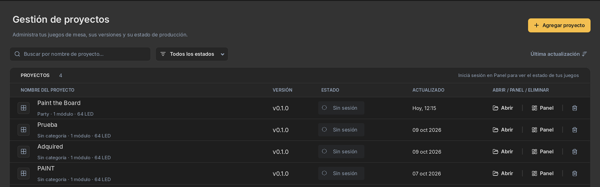
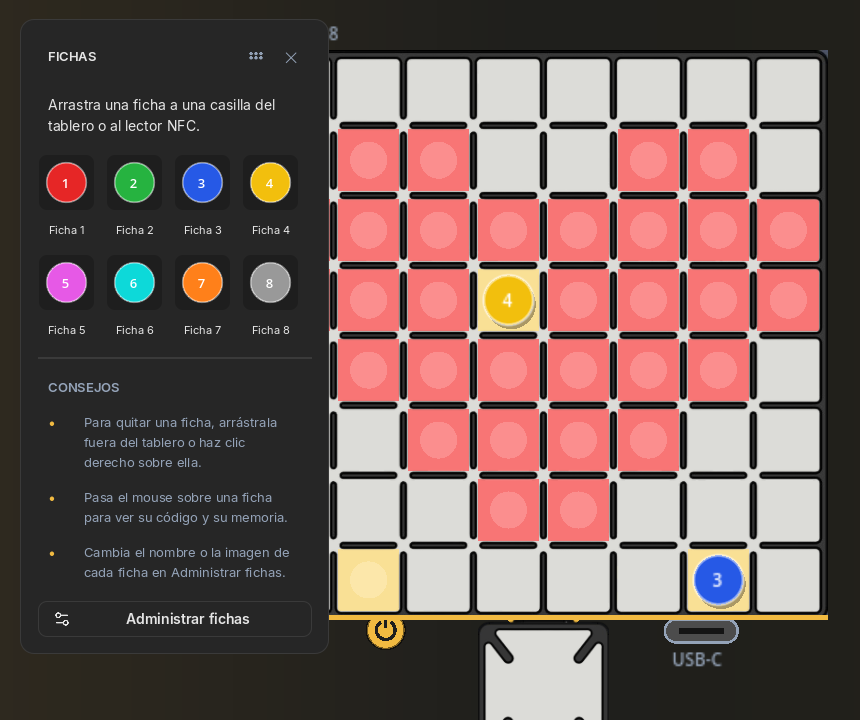
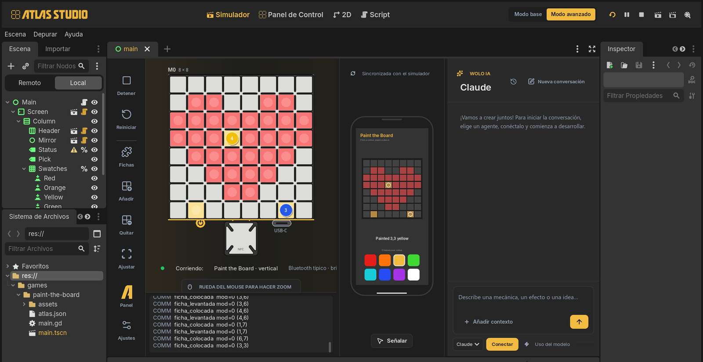
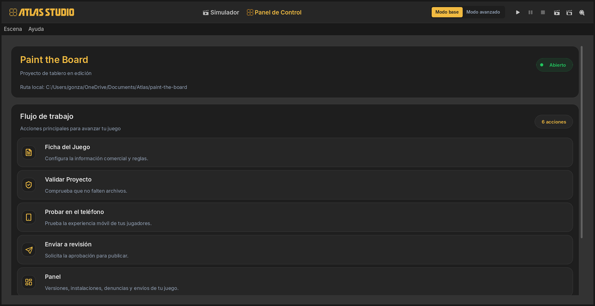
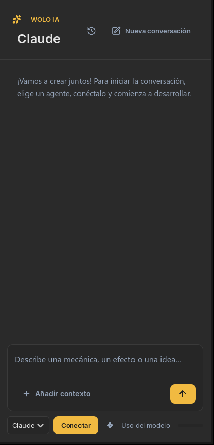

01What Atlas Studio is
Atlas Studio is the free PC app where Atlas games are made. It does four things, in this order:
- Create a game project that already follows every Atlas rule.
- Simulate the board and the phone, so you can play your game without any hardware.
- Check your game with the same rules the store will apply.
- Send it to your phone for real-board testing, and to the store when it’s ready.
You don’t need to know how to program. You describe what you want to an AI agent inside Studio, and it writes and tests the game for you. Studio is built on the Godot game engine, so if you do know how to code, everything is there when you need it.
Studio’s interface is in Spanish today. In these guides every on-screen label appears exactly as you’ll see it, like Simulador, followed by its translation in (italics) the first time.
02Install it
-
Download the installer
Get
AtlasStudioSetupfrom the Atlas Studio page. It’s for Windows; Mac and Linux are still to be confirmed. -
Run it
It installs for your user only, without administrator rights, and adds Atlas Studio to the Start menu and the desktop. The installer isn’t signed yet, so the first time Windows may show “Windows protected your PC”: click More info → Run anyway.
-
Open Atlas Studio
The first launch takes a moment while it prepares itself. Updating later is just running a newer installer: your settings, session and projects stay.
Keep your projects in a folder that isn’t synced by OneDrive or similar. Studio writes many small cache files while you work, and syncing them at the same time slows everything down.
03Your projects
Studio opens on Gestión de proyectos (project management), the list of your games. Every game is its own project, in its own folder.

- Agregar proyecto (add project) creates a new game, from scratch or from an example like Memoria, or adds one you already have.
- Abrir (open) opens a game. Panel shows how it’s doing in the store.
- The Estado (status) column shows where each game is: not sent, in review, published or needing changes. It needs you to be signed in.
- Deleting a project sends its folder to the Recycle Bin, so you can still get it back.
04The Simulator
When you open a game, Studio goes straight to the Simulador (Simulator) tab: a virtual Atlas 64 next to a virtual phone, with the AI agent on the right.
 1
2
3
4
5
6
7
8
1
2
3
4
5
6
7
8
- Tool rail. Ejecutar / Detener (run / stop), Reiniciar (restart), Fichas (pieces), Añadir / Quitar (add / remove a module), Ajustar (fit to view) and, at the bottom, Ajustes (settings).
- The board. Drag pieces onto cells, lift them off, drag a module to move it, right-click to rotate it, scroll to zoom.
- Atlas Core. Attached to module 0. Drop a piece on it and the game reads it, just like the real one.
- The phone. Your game’s screen, live. You can tap its buttons with the mouse.
- Señalar (point). Click something on the phone or a cell on the board to show it to the agent.
- WOLO IA, the chat with your AI agent.
- Basic and advanced mode. Basic shows only what you need; advanced opens the full editor.
- Run controls: play, pause and stop the game.


Basic and advanced mode
Projects open in Modo base (basic mode): board, phone and chat. Modo avanzado (advanced mode) adds the scene tree, the files, the inspector, the log and the 2D and Script tabs, for when you want to see or change what the agent built. You can switch at any time; nothing is lost.

05The Control Panel
The other tab, Panel de Control (control panel), has everything about your game that isn’t playing it:

| Ficha del Juego (game sheet) | Title, version, description, categories, number of boards and players, covers. What the store will show. |
| Validar Proyecto (validate) | Checks the game against the platform rules. Covered in guide 4. |
| Probar en el teléfono (test on phone) | Installs the game on your own phone to play it on a real board. Guide 5. |
| Enviar a revisión (send for review) | Sends the game to the store. Guide 6. |
| Panel | After publishing: versions, installs, reports and review results. |
06Talking to the agent
The chat on the right, WOLO IA, is where you make the game. You write what you want in plain words (“when a piece lands on a cell, paint it red”) and the agent changes the game, runs it in the Simulator and tells you how to try it.
Studio doesn’t come with its own AI. You bring the one you already use, and the account and its cost are yours:
- Claude: a Claude Pro or Max account, with Claude Code.
- ChatGPT (Codex): a ChatGPT account, with Codex.
- Gemini: a Gemini API key from Google AI Studio.

The first time
Pick your agent in the list at the bottom of the chat.
If your PC doesn’t have Node.js (a free program agents need), the chat shows Descargar Node.js. Install it and come back.
Press Instalar Claude (or the agent you chose). It’s a one-time install shared by all your projects.
Press Conectar (connect) and sign in with your account, or paste your key for Gemini. Then choose a model if you want, and start writing.
How to ask well
- One change at a time. “Add a timer” works better than a page of rules. Build, try, then ask for the next thing.
- Say how you’ll know it works. “When I lift the piece, the cell should stay painted” gives the agent something to test.
- Point instead of describing. Press Señalar, click the button or cell you mean, then write “make this bigger” or “this cell should be blue”. The agent gets a picture with your selection marked in gold.
- Talk like a designer. You don’t need technical words. The agent is told that you design board games and to answer in plain language, without showing code unless you ask.
Every conversation is saved with the project. The clock icon at the top of the chat reopens an earlier one; Nueva conversación starts fresh. Uso del modelo shows how much of your plan you’ve used.
07What the agent can and can’t do
- Create and change your game: rules, screens, colours, sounds.
- Check it against the platform rules.
- Run it in the Simulator and read its errors.
- Place and lift pieces, use Atlas Core and add or move modules.
- Read what every cell of the board is showing.
- Look at the phone screen, take screenshots and tap buttons.
- Fill in and save the Ficha del Juego.
- Test on your phone.
- Send the game to the store.
- Decide whether the game is fun.
The first three need your Atlas account, so the agent will ask you to do them.
Actions on your Atlas game are allowed without asking. Anything else the agent wants to do on your PC asks for your permission first.
08Activate your Atlas Developer account
You can make and simulate games without an account. To test on your phone and publish, you need an Atlas account with the creator option turned on. It’s activated from the AtlasHub app on your phone:
-
Sign in to AtlasHub with email and password
An anonymous account on the device can’t become a creator account.
-
Open the developer settings
Configuración → Configuración de desarrollador (Settings → Developer settings).
-
Tap “Habilitar cuenta de creador”
Habilitar cuenta de creador (enable creator account). If you haven’t entered your date of birth, AtlasHub asks for it first.
-
Read and accept the agreement
Tap Acepto el acuerdo (I accept the agreement). If you’re under 18 you need the authorization of a parent or legal guardian, and you confirm it with Tengo esa autorización (I have that authorization).
-
Sign in to Studio with the same account
Studio asks for it the first time you use Probar en el teléfono, Enviar a revisión or Panel. If the account isn’t a creator account, Studio tells you and points you back to AtlasHub.
Once it’s enabled, the same screen in AtlasHub shows Cuenta de creador and Modo desarrollador, which you’ll use in guide 5. Publishing itself is explained in guide 6.